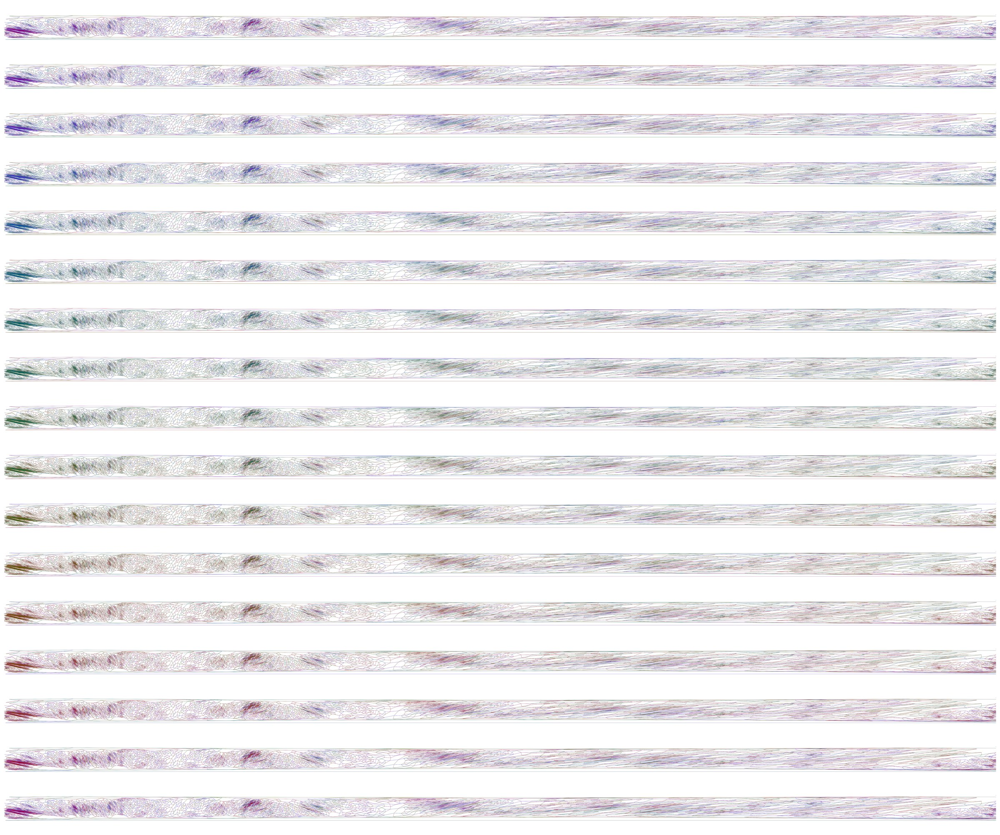
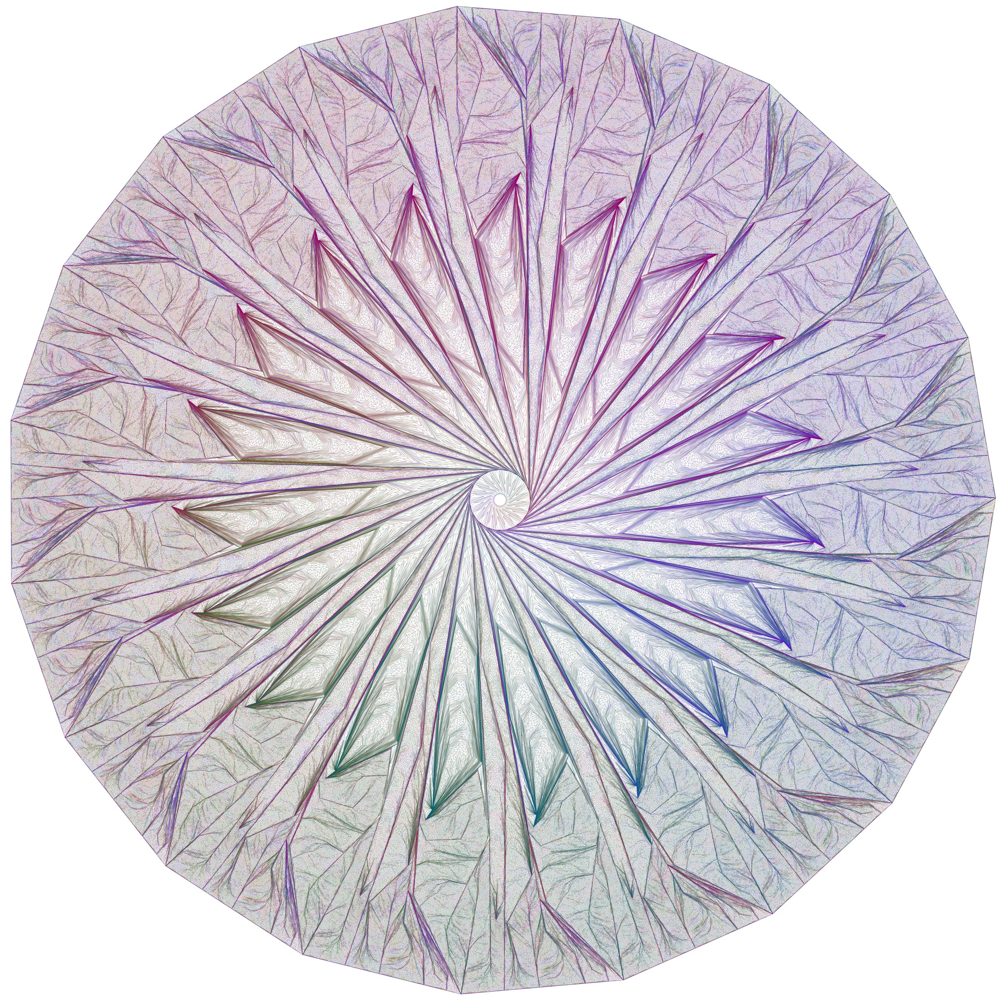

Lean 4 with Mathlib formally verifies certificates that 17- and 19-curve simple symmetric Venn diagrams satisfy the Venn diagram properties.
Abstract
We exhibit simple, rotationally symmetric Venn diagrams with 17 curves and with 19 curves: n Jordan curves carried to one another by rotation through 2π/n, with every one of the 2^n regions present and connected and, since the diagrams are simple, every crossing on exactly two curves. Symmetric Venn diagrams exist for every prime number of curves (Griggs, Killian and Savage, 2004), but those diagrams have many curves through a point; simple ones were known only up to 13 curves (Mamakani and Ruskey, 2014). Four 17-curve and nine 19-curve diagrams were found by a Metropolis walk on rotation-invariant quadrangulations of the sphere in which regions may temporarily be duplicated, started from the Griggs-Killian-Savage diagram with its multiple crossings resolved. Every diagram is given by a machine-checkable certificate; one certificate of each size has been verified by a formal proof in Lean 4. All of the diagrams are non-monotone, which is why the crossing-sequence searches that found the 11- and 13-curve diagrams could not have found them.
Problem
Whether simple, rotationally symmetric Venn diagrams (n Jordan curves related by rotation with all 2^n regions present) exist for prime numbers of curves beyond 13. Prior methods enumerated only monotone diagrams and were known only up to 13 curves.
Approach
A Metropolis walk searches rotation-invariant cube-square quadrangulations of the sphere in which regions may temporarily be duplicated, started from a resolved Griggs–Killian–Savage diagram. Each found diagram is given as a machine-checkable certificate of its dual map's faces. Two independent checkers accept all certificates. One certificate of each size (17 and 19) is formally verified in Lean 4 with Mathlib, proving the curves are Jordan curves related by 2π/n rotation with all regions path-connected and every crossing transversal on two curves.

Figure 2: The 17-curve diagram c178d7bd unrolled: its seventeen congruent sectors, each a fundamental domain of the rotation containing 131{,}070/17=7{,}710 crossings, drawn as rows, with the colour of each curve advancing by one position from row to row. The whole diagram is one row bent around the centre seventeen times.
Results
Four 17-curve and nine 19-curve simple symmetric Venn diagrams are exhibited, all non-monotone. Lean proofs verify one certificate of each size; the 17-curve development builds in under an hour and the 19-curve port in twenty minutes, using native_decide for finite parts.

Figure 1: One of the nine 19-curve diagrams (certificate fcb7ad34 ), drawn from its certificate at near-uniform crossing density by the plotter described in the data repository: 19 curves, 524{,}286 crossings, every one of the 524{,}288 regions present exactly once. The centre hole is the region inside all 19 curves; the outer face is the region outside all of them. Colours identify curves.